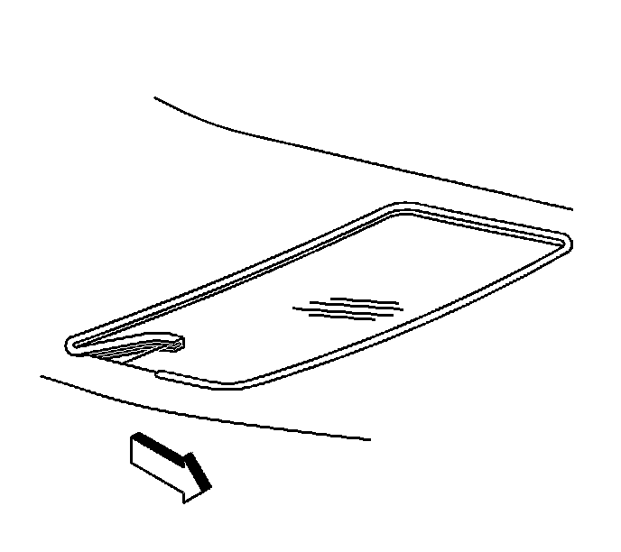

Sunroof Opening Trim Finish Lace Replacement (Rear)
Sunroof Opening Trim Finish Lace Replacement (Rear)
Removal Procedure

1. Open the rear sunshade to the full open position.
2. Pull the center rear of the finish lace inward toward the motor actuator compartment.
3. Remove the trim lace from the vehicle.
Installation Procedure
1. Position the center weld joint for the finish lace at the rear center of the front window.
2. Work from the weld joint clockwise around the periphery of the flange, securing the trim finish lace to the headliner.
3. Ensure that the corners of the trim lace are secure to the flange.
4. Pull the string in order to overlap the trim lace to the headliner material.